1 — You have six data models and you think you have one
Ask your codebase what a "user" is. Count the answers. That number is roughly your future migration bill.
Open a few weeks into most vibe-coded apps and you'll find users,
accounts, profiles, and members —
overlapping tables, each invented by a different feature request, partially
in sync, "joined" by matching email strings in application code instead of
a real foreign key.

Dotted lines are "joined by matching email strings in app code," not real foreign keys. That's the whole diagnosis in one picture.
This isn't carelessness — it's what you get by construction. Each prompt optimises for the feature in front of it, not the system behind it. The model has no persistent memory of the domain model it invented three prompts ago, so it invents a new one that happens to solve today's request. This is measurable, not a vibe: GitClear's analysis of 211 million changed lines found copy-pasted code overtook refactored code for the first time on record in 2024, with duplication climbing and refactoring falling under 10% of changes. Their 2026 follow-up, on 623 million changes, found refactoring down to 3.8%. Six data models is the data-layer symptom of the same habit that shows up as duplicated functions everywhere else.
The fix isn't clever — it's just old. Codd's normal forms exist specifically to stop one fact being stored in more than one place; Eric Evans' domain-driven design calls the missing piece a ubiquitous language — one authored model everyone, including the AI, is working from.

The authored alternative: every fact owned exactly once.
This isn't a style complaint. Split identity is where sync bugs live — a user cancels in one table and stays "active" in another, a permission check reads the table nobody updated. And it makes migrations dangerous even in experienced hands: a single schema migration at GitHub cascaded into a replica crash-loop that took down Actions, the API, and pull requests. Resend lost every table in production for twelve hours after a migration command meant for a local database ran against the live one. Neither company was short on engineering discipline — they just show how little margin a migration has even when the model underneath it is clean. On four tables joined by string-matching instead of foreign keys, that margin is close to zero.
You can't rename your way out of this live. The way through is boring on purpose: expand, dual-write, backfill, migrate reads, migrate writes, contract. Never a rename in place. Deploying the code and releasing the behaviour are two separate events, not one.
The escape route — each step ships and bakes on its own before the next one starts.
If you've shipped fast with AI tools and want a second pair of eyes before it goes further, that's exactly what a vibe code audit is for.